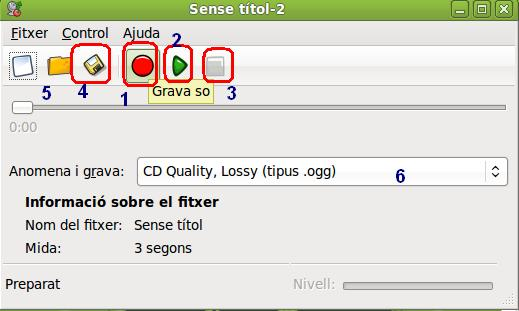

Edición de Audio y video
3.1. Actividad Grabar Sonidos
1- Entra en el programa de Grabador de Sonidos de tu Sistema.
- Utilizando el botón rojo de grabar (1), procede a generar unos ficheros para descubrir las características de los diferentes tipos (6).

- Procede a grabar tu voz durante 10 segundos y utiliza el botón para detener la misma. Utilizando la extensión flac1., 10 segundos ocupan 849 Kb sin pérdida, mientras que 10 segundos con pérdida ocupan 214 Kb y su extensión es ogg.
- Si utilizas la opción con voz, el formato que aparece por defecto es wav2 El tamaño de los 10 segundos es 454 Kb.
- Para reproducir (2) lo grabado utiliza el play, mientras que apra detener la grabación utiliza detener (3).
- Para grbar nuestra grabación utiliza (4) y para abrir grabaciones ya guardadas el icono (5).
2. En Anexos del Tema, tienes diversos ficheros de sonidos y en diferentes formatos. Genera diversas métodos de grabaciones de sonidos: mp3, ogg, flac, wav, mp4 y las que tu versión te permita.
- Observa que tipos puedes abrir con el grabador de sonidos y reproducirlos.
3. Descubre las características de cada uno de los tipos de archivos que puedes grabar en dicho programa.
- Ejemplo: flac, wav, ogg, entre otros
Jo.R.C.A. 2004 - 2011

Edición de Audio y Video con Software Libre by José Ramón Cerdeira Alonso is licensed under a Creative Commons Reconocimiento-No comercial-Compartir bajo la misma licencia 3.0 España License